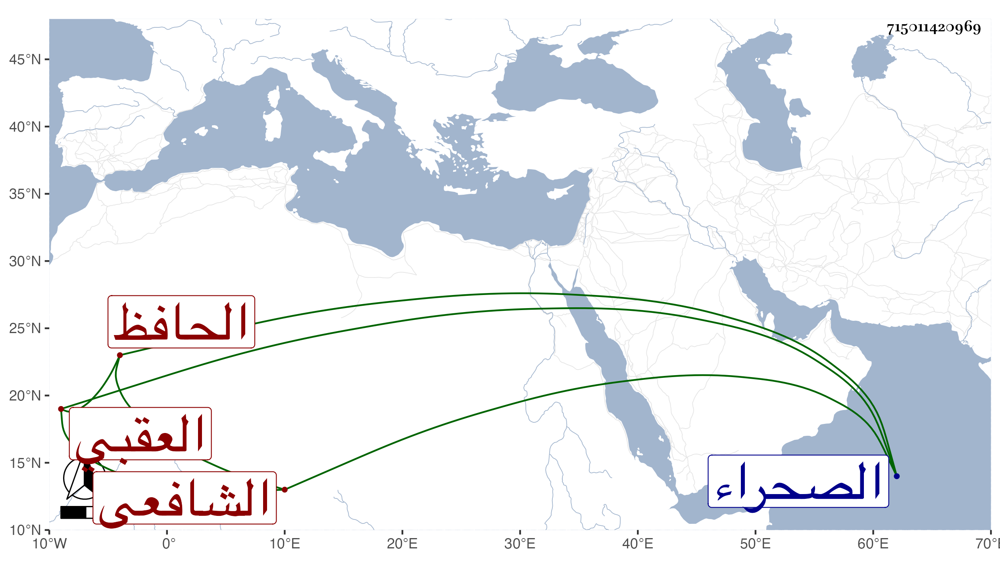

0902Sakhawi.DawLamic.ITO20230111-ara1.EIS1600.715011420969
Biography ID: 715011420969
227
عبد الرحمن بن رضوان بن محمد بن يوسف جلال الدين أبو المفاخر ابن مفيدنا وشيخنا الحافظ الزين أبي النعيم العقبي الأصل القاهري الصحراوي الشافعي واسم أمه نورة ابنة مكي وتدعى حرير . ولد في سنة أربع وثلاثين وثمانمائة بتربة قجماس من الصحراء ونشأ بها في كنف أبيه فحفظ القرآن وبلوغ المرام لشيخنا وعرضه عليه بتمامه حفظا وكذا حفظ غيره واعتنى به أبوه فأحضره ثم أسمعه الكثير عاليا ونازلا على من لا يحصى كثرة كالبدر حسين البوصيري والشهاب الواسطي والزين الزركشي وعائشة الكنانية وقريبتها فاطمة والفاقوسي والشرابيشي وابن ناظر الصاحبة وابن بردس وابن الطحان والمحب بن نصر الله الحنبلي والعز بن الفرات وأجاز له خلق وخرج له أبوه المتباينات مات عنها مسودة ، واشتغل يسيرا وقرأ في الحاوي على العلم البلقيني وفي المنطق وغيره على آخرين ، ولما مات والده أضيفت إليه جهاته كالاسماع في الشيخونية والخدمة بالأشرفية برسباي ، ولزم الاشتغال قليلا والتمس مني مساعدته في تبييض المتباينات المشار اليها فعاقه المقدور ثم عرض له في عقله شيء يقال ان سببه الاعتناء بالروحاني لكن مع سكون وسكوت في أكثر أوقاته بل سمعت انه كان يكثر التلاوة وربما تكلم في بعض المسائل وأتى بما يستظرف من السجعات المتوالية والكلمات المنتظمة مع تعففه وعدم قبوله لشيء الا حين الحاجة ، ولم يزل على ذلك إلى أن مات في ليلة الاربعاء رابع عشر جمادى الأولى سنة احدى وثمانين ودفن من الغد عند أبيه رحمه الله وعوضه الجنة .
